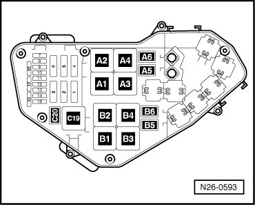
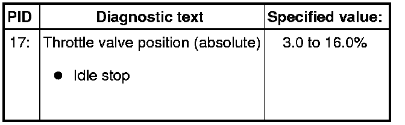
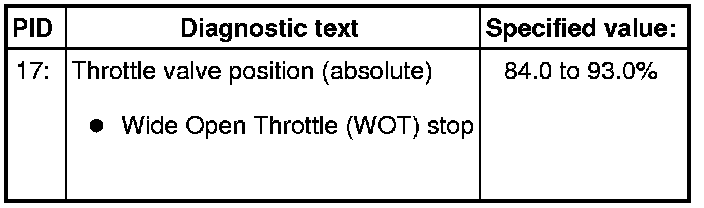
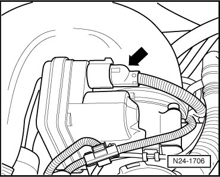
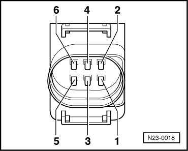
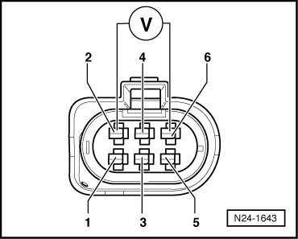
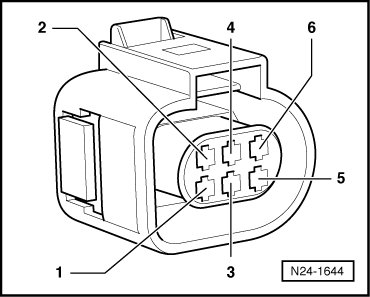

Variable Induction Control Module: Testing and Inspection
Diagnostic Procedures
Throttle Valve Control Module, Checking
• Use only gold-plated terminals when servicing terminals in harness connector of throttle valve control module.
Function
The throttle valve activation occurs via an electric motor (throttle drive) in the throttle valve control module. It is activated by the Engine Control Module (ECM) according to specifications of the two sensors, Throttle Position (TP) Sensor (G79) and Sender -2- for accelerator pedal position (G185) --> [ Electronic Engine Power Control ] Electronic Engine Power Control, function of the EPC system.
Components of Throttle valve control module (J338):
• Throttle Drive (for Electronic Power Control (EPC) (G186)
• Throttle Drive Angle Sensor 1 (for Electronic Power Control (EPC)) (G187)
• Throttle Drive Angle Sensor 2 (for Electronic Power Control (EPC)) (G188)
Special tools, testers and auxiliary items required
• Multimeter (VAG1526) or Multimeter (VAG1715)
• Connector test kit (VAG1594)
• Wiring diagram
Test requirements
Fuses in E-box (plenum chamber, left) must be OK:

Battery voltage must be at least 11.5 volts.
All electrical consumers such as, lights and rear window defroster must be switched off.
Parking brake must be engaged or else daylight driving lights will be switched on.
If vehicle is equipped with an A/C system, it must be switched off.
Ground (GND) connections between engine and chassis must be OK.
Throttle valve must not be damaged or dirty.
Coolant temperature must be at least 20° C, Diagnostic mode 1: Check measured values; PID 5, Coolant temperature.
Function test
- Connect diagnostic tester.
- Switch ignition on.
- Under address word 33, select "Diagnostic mode 1: Checking measured values."
- Select the measuring value "PID 17: Throttle valve position (absolute)."
- Check specified value of throttle valve position (absolute) at idle stop:

- Slowly depress accelerator pedal up to Wide Open Throttle (WOT) stop while observing the percentage display.
The percentage display must increase uniformly.
- Check specified value of throttle valve position (absolute) at Wide Open Throttle (WOT) stop:

- End diagnosis and switch ignition off.
If specified values are not obtained:
- Disconnect 6-pin connector at the throttle valve control module (arrow).

Checking resistance
- Measure resistance of Throttle drive (power accelerator actuation) (G186) in Throttle Valve Control Module (J338) between terminals 3 + 5

Specified value: 1.0 to 5.0 ohms
If specified value is not obtained:
- Replace Throttle Valve Control Module (J338), intake manifold change-over, disassembling and assembling.
- Erase DTC memory of Engine Control Module (ECM), Diagnostic mode 4: Reset/erase diagnostic data.
- Generate readiness code.
If specified value is obtained:
- Check voltage supply of throttle valve control module and wiring to control module.
- Check Throttle Position (TP) Sensor (G79) and Sender -2- for accelerator pedal position (G185).
If voltage supply and wires are OK:
- Replace Motronic Engine Control Module (ECM) (J220).
Checking voltage supply and wiring to control module
- Connect multimeter to connector terminals 2 + 6 for voltage measurement.

- Switch ignition on.
Specified value: at least 4.5 V
- Switch ignition off.
If there is no voltage:
- Connect test box to control module wiring harness , connect test box for wiring test.
- Check wires between test box and 6-pin connector for open circuit according to wiring diagram:

Terminal 1 + socket 92
Terminal 2 + socket 83
Terminal 3 + socket 117
Terminal 4 + socket 84
Terminal 5 + socket 118
Terminal 6 + socket 91
Wire resistance: max. 1.5 ohms
- Check wires for short circuit to each other, to vehicle Ground (GND) and to B+.
Specified value: infinite ohms
- Erase DTC memory of Engine Control Module (ECM) , Diagnostic mode 4: Reset/erase diagnostic data.
- Generate readiness code.
If no malfunctions are found in wires:
- Check voltage supply of Engine Control Module (ECM) according to wiring diagram:
Final Procedures
After the repair work, the following work steps must be performed in the following sequence:
1. Check the DTC memory. Refer to --> [ Diagnostic Mode 03 - Read DTC Memory ] Diagnostic Modes 01 - 09.
2. If necessary, erase the DTC memory. Refer to --> [ Diagnostic Mode 04 - Erase DTC Memory ] Diagnostic Modes 01 - 09.
3. If the DTC memory was erased, generate readiness code. Refer to --> [ Readiness Code ] Monitors, Trips, Drive Cycles and Readiness Codes.